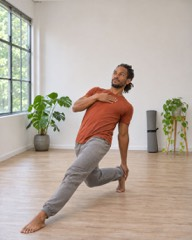
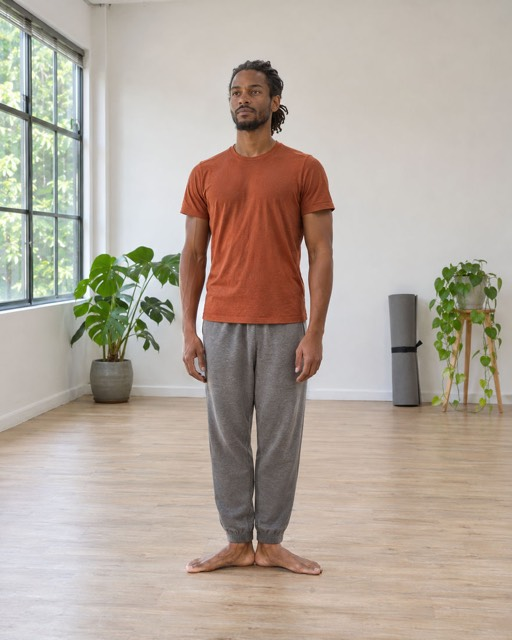
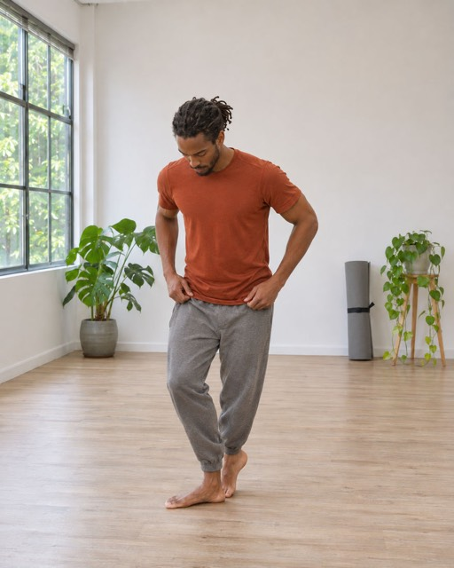
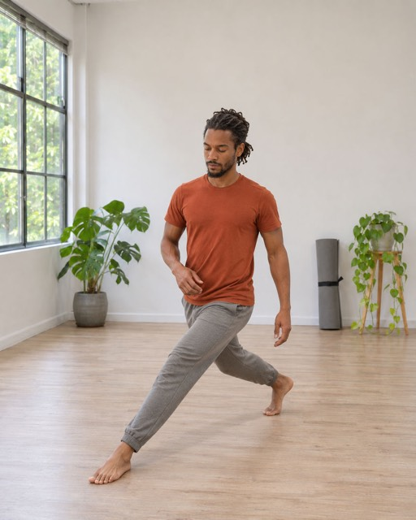
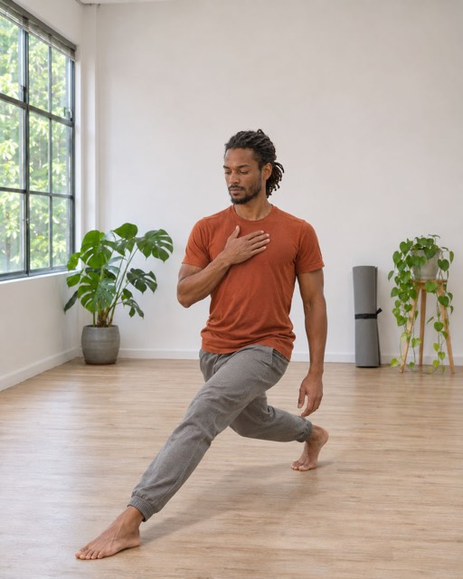
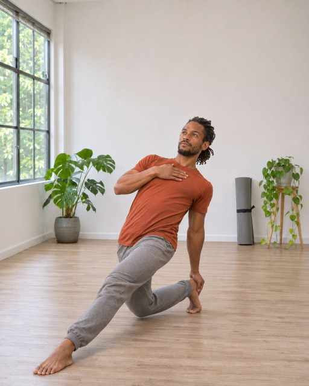

1Bring your heels together and open your feet to 90 degrees.

2Step one foot back on a diagonal, toes behind the heel, on a line twice your shoulder width.

3The back foot stays in line, heel lifted. Both legs are bent.

4Put most of your weight on the back leg, torso upright.
Reach the back leg with the opposite hand: behind the knee, then the calf or the heel. Don't twist: imagine diving backwards.

610 reps per side; on the last one, hold the position for 10 seconds. 3 rounds.